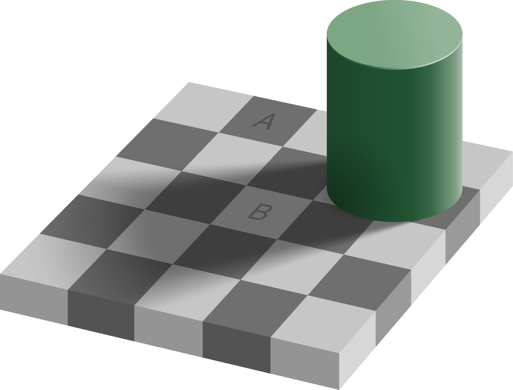
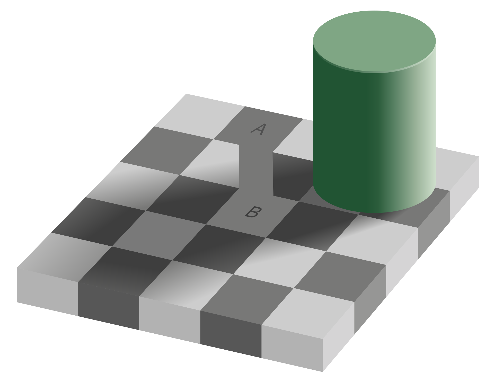
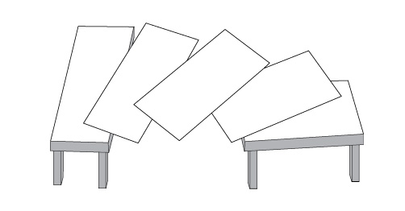
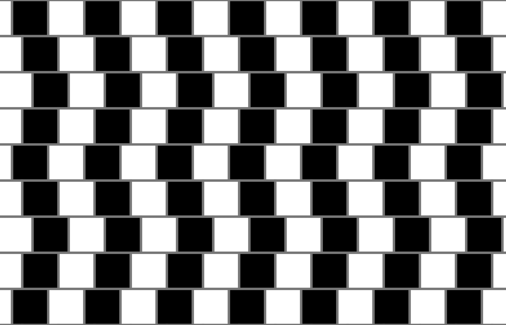

This page hosts image examples of all kinds of illusions, especially optical ones.




Camouflage
Beleive it or not, camouflage can considered an optical illusion. Below
is an image example of a fish called a peacock flounder blending in with
the sea floor